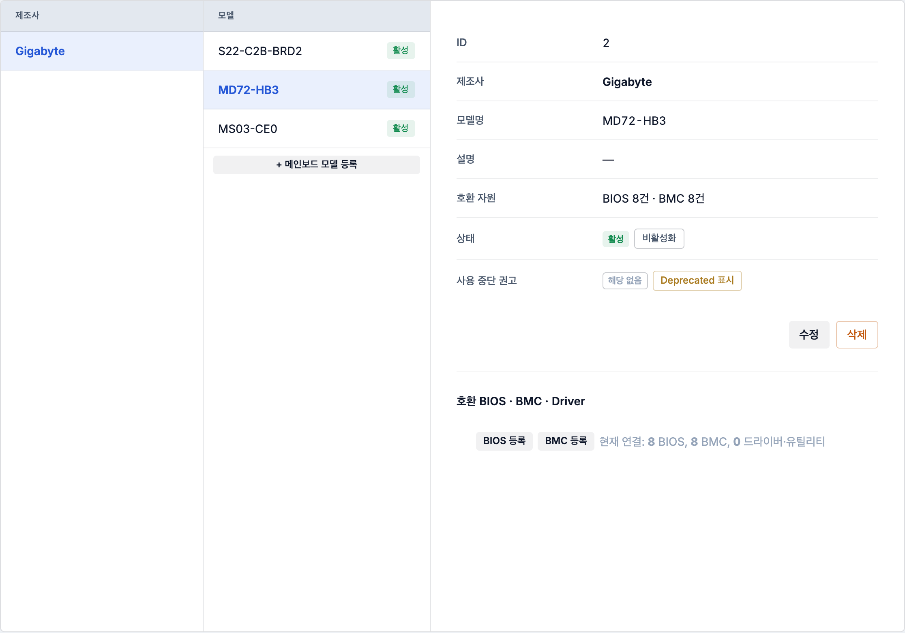

메인보드
메인보드 모델은 서버가 PXE 부팅으로 등록될 때 기준이 되는 자원입니다. BIOS 펌웨어와 BMC 펌웨어, 특정 보드 전용 드라이버와 유틸리티는 모두 메인보드 모델 아래에 등록합니다.
메인보드 모델이 먼저 필요한 이유
서버가 PXE 부팅하면 자신의 제조사와 보드 모델명을 PXE 서버에 보고합니다. PXE 서버는 이 값을 등록된 메인보드 모델과 비교하고, 일치하는 모델이 있을 때만 서버를 등록합니다. 일치하는 모델이 없으면 서버는 서버 목록에 나타나지 않습니다.
따라서 새 기종의 서버를 처음 연결하기 전에 그 서버의 메인보드 모델을 먼저 등록해야 합니다.
모델명 비교 규칙
- 제조사가 같고 모델명의 철자가 같아야 일치합니다. 일부만 같은 이름은 일치로 보지 않습니다. 대소문자는 구분하지 않습니다.
- Gigabyte 보드는 모델명 끝에
-000,-00같은 숫자 접미사를 붙여 보고합니다. 보고된 이름 그대로 일치하는 모델이 없으면 PXE 서버가 이 접미사를 떼고 한 번 더 비교합니다. 그래서MS03-CE0-000으로 보고하는 서버는MS03-CE0으로 등록한 모델과도 일치합니다. - 비교 대상은 휴지통에 있지 않은 모델 전부입니다. 모델을 비활성화하거나 Deprecated 로 표시해도 서버 등록은 막히지 않습니다. 다만 비활성화하면 하위 펌웨어도 함께 비활성이 되어 펌웨어 업데이트 단계가 실행되지 않습니다(상태 변경과 삭제).
화면 구성
사이드바에서 자원 관리메인보드 를 엽니다. 화면은 세 개의 열로 나뉩니다. 왼쪽 열에서 제조사를 고르면 가운데 열에 그 제조사의 모델이 나타나고, 모델을 고르면 오른쪽 열에 상세 정보가 나타납니다.

상세 열의 주요 항목은 다음과 같습니다.
| 항목 | 내용 |
|---|---|
| 제조사, 모델명 | 등록할 때 입력한 값. Deprecated 로 표시된 모델은 모델명 옆에 Deprecated 배지 |
| 호환 자원 | 이 모델 아래에 등록된 BIOS 펌웨어와 BMC 펌웨어의 개수. 드라이버와 유틸리티의 개수는 상세 열 아래쪽의 현재 연결 줄에 표시 |
| 상태 | 활성 여부와 비활성화 또는 활성화 버튼 |
| 사용 중단 권고 | Deprecated 표시 여부와 Deprecated 표시 또는 Deprecated 해제 버튼 |
화면 위쪽의 조회 띠에서 제조사, 모델명, 설명으로 검색할 수 있습니다. 활성(전체, 활성, 비활성), 사용 중단(전체, 권고, 정상), 삭제된 항목 포함 조건으로 목록을 좁힐 수도 있습니다.
메인보드 모델 등록
- 자원 관리메인보드 에서 + 신규 메인보드 모델 등록 을 누릅니다.
- 제조사를 고릅니다. 고를 수 있는 제조사는 Gigabyte, Asus, Fujitsu 이지만, 프로비저닝은 Gigabyte 메인보드에서만 진행할 수 있습니다.
- 모델명을 입력합니다. 128자까지 입력할 수 있습니다. 서버가 보고하는 모델명과 같게 입력합니다. Gigabyte 보드라면 숫자 접미사를 뺀 이름으로 입력해도 됩니다(모델명 비교 규칙).
- 필요하면 설명을 입력합니다. 1024자까지 입력할 수 있습니다.
- 등록 을 누릅니다. 등록이 끝나면 목록으로 돌아가고 방금 등록한 모델이 선택된 상태로 열립니다.
목록에 없는 제조사는 화면에서 추가할 수 없습니다. 새 제조사를 추가하려면 프로그램을 변경해야 하므로 PXE 서버 관리자에게 요청합니다.
같은 모델이 이미 있을 때
같은 제조사와 모델명을 가진 모델이 이미 있으면 기존 모델의 상태에 따라 화면이 다르게 안내합니다.
- 기존 모델이 삭제되지 않았고 Deprecated 도 아니면(비활성 포함) 등록되지 않고, 모델명 칸 아래에 "이미 등록된 메인보드 모델입니다. Gigabyte MS03-CE0" 처럼 제조사와 모델명이 붙은 오류가 표시됩니다.
- 기존 모델이 휴지통에 있거나 Deprecated 로 표시돼 있으면 "동일한 자원이 이미 존재합니다" 창이 열립니다. 이 창에서 그래도 등록, 기존 영구 삭제 후 등록, 취소 중 하나를 고릅니다.
휴지통에 있는 모델을 다시 쓰려면 새로 등록하지 않고 복구합니다. 복구하면 그 모델 아래에 있던 펌웨어도 함께 되살릴 수 있습니다.
기존 모델이 Deprecated 로 표시돼 있을 때 그래도 등록 을 고르면 같은 제조사와 모델명의 모델이 두 개가 됩니다. 이 상태에서는 그 보드를 가진 서버가 PXE 부팅해도 등록되지 않습니다. Deprecated 모델을 다시 쓰려면 새로 등록하지 않고 기존 모델의 Deprecated 해제 를 누릅니다.
정보 수정
상세 열에서 수정 을 누르면 모델명과 설명을 바꿀 수 있습니다. 바꾼 뒤 저장 을 누릅니다.
- 제조사는 바꿀 수 없습니다. 제조사를 잘못 골랐다면 모델을 삭제하고 다시 등록합니다.
- 모델명을 바꿔도 이미 등록된 서버와의 연결은 그대로이고, 서버 화면에 보이는 보드 이름만 새 이름으로 바뀝니다. 이후에 PXE 부팅하는 서버는 바뀐 모델명으로 비교합니다.
펌웨어 등록으로 이어가기
상세 열 아래쪽의 BIOS 등록, BMC 등록 버튼을 누르면 이 모델이 미리 선택된 상태로 펌웨어 등록 화면이 열립니다. 등록 방법은 BIOS 펌웨어와 BMC 펌웨어에서 설명합니다.
상태 변경과 삭제
메인보드 모델의 상태 변경은 아래에 등록된 자원에도 영향을 줍니다. 활성, 사용 중단 권고, 삭제와 복구의 일반적인 의미는 자원의 상태와 삭제에서 설명합니다. 여기서는 메인보드 모델에만 해당하는 내용을 다룹니다.
| 동작 | 하위 자원에 미치는 영향 |
|---|---|
| 비활성화 | 이 모델 아래의 BIOS 펌웨어, BMC 펌웨어, 드라이버와 유틸리티 전부 비활성. 그동안 이 보드의 펌웨어 업데이트는 사용할 펌웨어 부재로 생략, 정의서 작성 화면의 메인보드 선택지에서도 제외. 다시 활성화 하면 하위 자원 중 개별적으로 활성이던 것만 활성으로 복귀 |
| Deprecated 표시 | 확인 창을 거친 뒤 하위 자원도 함께 Deprecated 표시. 해제해도 하위 자원 중 직접 Deprecated 로 표시해 둔 것은 유지 |
| 삭제 | 확인 창을 거친 뒤 하위 자원과 함께 휴지통으로 이동 |
| 복구 | 조회 띠의 삭제된 항목 포함을 켜면 삭제된 모델에 버튼 표시. 확인 창의 기본 선택 "하위 BIOS / BMC / 드라이버·유틸리티 도 함께 복구" 를 그대로 두면 휴지통의 하위 자원도 함께 복구, "이 자원만 복구" 를 고르면 모델만 복구 |
| 영구 삭제 | 확인 창에 표시된 자원명(제조사와 모델명, 예: Gigabyte MS03-CE0)을 그대로 입력한 뒤 삭제. 하위 자원이 휴지통을 포함해 하나라도 남아 있으면 불가(하위 자원을 먼저 영구 삭제) |
영구 삭제는 되돌릴 수 없습니다. 이 모델로 이미 등록된 서버의 하드웨어 정보와 이 보드용 BIOS 세팅 템플릿도 함께 삭제됩니다. 이 모델을 쓰는 서버와 템플릿이 더 이상 필요 없는지 확인한 뒤 진행합니다.